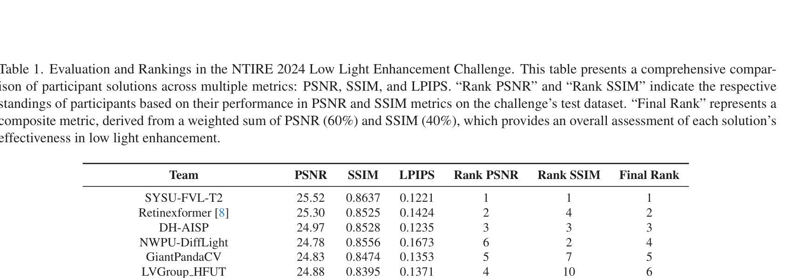
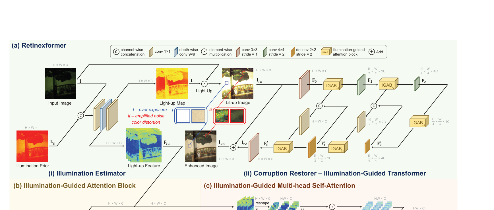
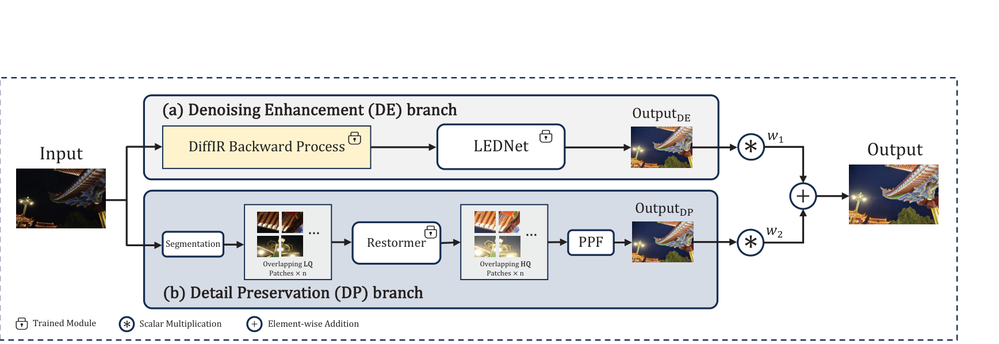
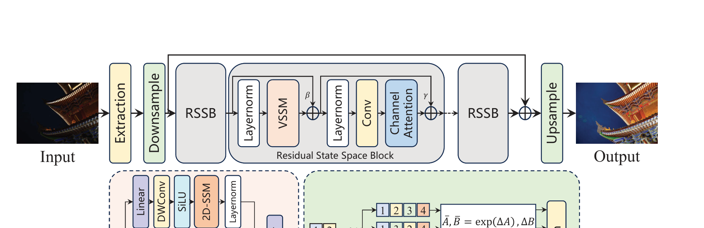
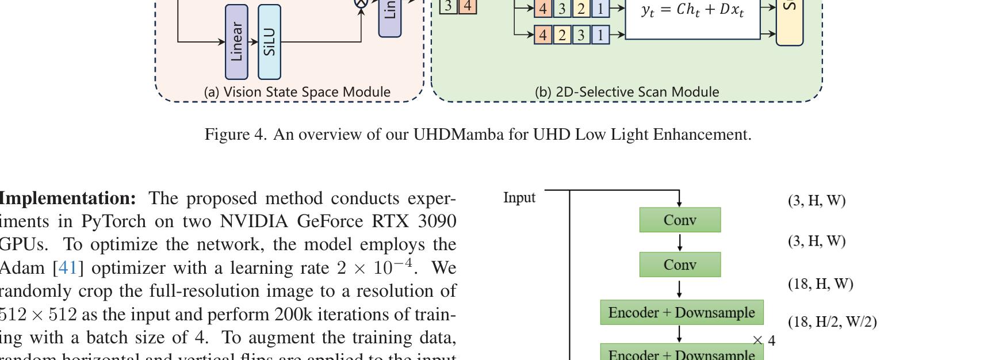

Báo Cáo Cuộc Thi NTIRE 2024 Về Tăng Cường Ảnh Thiếu Sáng: Phương Pháp và Kết Quả
NTIRE 2024 Challenge on Low Light Image Enhancement: Methods and Results
Bài báo này tổng kết và phân tích toàn diện cuộc thi NTIRE 2024 Challenge on Low Light Image Enhancement được tổ chức trong khuôn khổ hội nghị CVPR 2024. Mục tiêu của cuộc thi là thúc đẩy giới hạn nghiên cứu về tăng cường ảnh thiếu sáng trong các điều kiện chụp thực tế đầy khắc nghiệt (ánh sáng cực tối, chiếu sáng không đồng đều, ngược sáng mạnh, và cảnh đêm đô thị phức tạp) với độ phân giải lên đến 4K. Cuộc thi đã thu hút hơn 230 đội nghiên cứu đăng ký tham gia từ các trường đại học và phòng lab AI hàng đầu thế giới, trong đó có 22 giải pháp hoàn chỉnh vượt qua vòng kiểm thử gắt gao trên máy chủ độc lập của ban tổ chức. Các giải pháp tham dự đại diện cho các xu hướng công nghệ tiên tiến nhất hiện nay: từ các biến thể Vision Transformer phân cấp, mạng nơ-ron tích chập đa miền không gian-tần số, đến các mô hình khuếch tán điều kiện (Conditional Diffusion Models) và các kỹ thuật căn chỉnh phản xạ Retinex. Báo cáo này công bố bảng xếp hạng chính thức, phân tích sâu các ưu nhược điểm kỹ thuật của từng trường phái, và vạch ra xu hướng nghiên cứu tương lai cho bài toán phục hồi ảnh thiếu sáng thế giới thực.

1. Giới Thiệu Bối Cảnh Cuộc Thi (Introduction)
Chụp ảnh trong điều kiện ánh sáng yếu (Low-Light Imaging) là bài toán then chốt trong các hệ thống thị giác máy tính và nhiếp ảnh di động. Trong điều kiện thiếu sáng nghiêm trọng, ảnh chụp từ cảm biến di động bị suy thoái đa chiều: mất chi tiết ở vùng tối (underexposure), nhiễu hạt cảm biến dày đặc (heavy sensor noise), và sai lệch dải màu sắc (severe color casts).
Mặc dù các bộ dữ liệu trước đây như LOL [71] hay MIT-Adobe FiveK [7] đã thúc đẩy nhiều tiến bộ ban đầu, chúng tồn tại những hạn chế cốt lõi nghiêm trọng:
- Độ phân giải thấp (chủ yếu là $400 \times 600$ hoặc $1000 \times 600$), không phản ánh đúng chuẩn camera di động 12MP–48MP hiện nay.
- Bối cảnh chiếu sáng đồng nhất và đơn điệu, thiếu vắng các trường hợp phức tạp như ngược sáng mạnh, đèn flash cục bộ hay quầng sáng đêm.
- Khả năng tổng quát hóa (generalization) của các mô hình huấn luyện trên dữ liệu cũ bị sụt giảm nghiêm trọng khi đối mặt với ảnh chụp thực tế.
Cuộc thi NTIRE 2024 được thiết lập nhằm khắc phục các rào cản trên bằng cách xây dựng một bộ dữ liệu chuẩn mới với 3 mục tiêu chiến lược: (1) Thúc đẩy các kiến trúc mô hình bền vững trước suy thoái thế giới thực; (2) So sánh có hệ thống giữa các trường phái (CNN, Transformer, Diffusion); và (3) Kết nối cộng đồng học thuật với các ứng dụng công nghiệp nhiếp ảnh tính toán.
2. Thiết Kế Cuộc Thi & Bộ Dữ Liệu (Challenge Protocol)
Bộ dữ liệu NTIRE 2024 Low Light bao gồm:
- 230 cặp ảnh huấn luyện (Train): Cung cấp đầy đủ ảnh thiếu sáng đầu vào và ảnh chuẩn phơi sáng (Ground Truth).
- 35 ảnh kiểm thử phát triển (Validation): Ảnh GT được giữ kín trên máy chủ đánh giá CodaLab.
- 35 ảnh kiểm thử chính thức (Test): Hoàn toàn bảo mật, các đội thi nộp mã nguồn và mô hình để ban tổ chức chạy suy luận độc lập (blind evaluation).
Tiêu chuẩn xếp hạng chính thức (Ranking Metric): Ban tổ chức áp dụng điểm số tổng hợp dựa trên trọng số chuẩn hóa giữa độ chính xác tái tạo điểm ảnh và độ tương đồng cấu trúc:
Chỉ số cảm nhận tri giác LPIPS [80] được sử dụng làm tiêu chí phụ phân định thứ hạng khi hai phương pháp có điểm số PSNR/SSIM tương đương.
| Tên Đội Thi (Team) | PSNR (dB) ↑ | SSIM ↑ | LPIPS ↓ | Hạng PSNR | Hạng SSIM | Xếp Hạng Chung Cuộc |
|---|---|---|---|---|---|---|
| 🥇 SYSU-FVL-T2 | 25.52 | 0.8637 | 0.1221 | 1 | 1 | Hạng 1 (Quán Quân) |
| 🥈 Retinexformer [8] | 25.30 | 0.8525 | 0.1424 | 2 | 4 | Hạng 2 (Á Quân 1) |
| 🥉 DH-AISP | 24.97 | 0.8528 | 0.1235 | 3 | 3 | Hạng 3 (Á Quân 2) |
| NWPU-DiffLight | 24.78 | 0.8556 | 0.1673 | 6 | 2 | Hạng 4 |
| GiantPandaCV | 24.83 | 0.8474 | 0.1353 | 5 | 7 | Hạng 5 |
| LVGroup HFUT | 24.88 | 0.8395 | 0.1371 | 4 | 10 | Hạng 6 |
| Try1try8 | 24.49 | 0.8483 | 0.1359 | 8 | 6 | Hạng 7 |
| Pixel warrior | 24.74 | 0.8416 | 0.1514 | 7 | 9 | Hạng 8 |
| HuiT | 24.13 | 0.8484 | 0.1436 | 10 | 5 | Hạng 9 |
| X-LIME | 24.28 | 0.8446 | 0.1298 | 9 | 8 | Hạng 10 |
| Image Lab | 23.63 | 0.8235 | 0.1673 | 11 | 12 | Hạng 11 |
| dgzzqteam | 23.28 | 0.8385 | 0.1406 | 12 | 11 | Hạng 12 |
| Cidaut AI (InstructIR [23]) | 23.07 | 0.8075 | 0.1559 | 13 | 16 | Hạng 13 (Nhóm tác giả DarkIR) |
| OptDev | 22.93 | 0.8097 | 0.1592 | 14 | 15 | Hạng 14 |
| ataza | 22.51 | 0.8161 | 0.1404 | 18 | 13 | Hạng 15 |
| KLETech-CEVI LowlightHypnotise | 22.85 | 0.7828 | 0.1823 | 15 | 18 | Hạng 16 |
| ⭐ 221B | 22.04 | 0.8141 | 0.1084 | 19 | 14 | Hạng 17 (Top 1 LPIPS Tri Giác) |
| KLETech-CEVI Dark Knights | 22.76 | 0.7843 | 0.1806 | 17 | 17 | Hạng 18 |
| BFU-LL | 22.78 | 0.7792 | 0.1826 | 16 | 19 | Hạng 19 |
| SVNIT NTNU | 20.32 | 0.7718 | 0.3089 | 20 | 20 | Hạng 20 |
| yanhailong | 20.07 | 0.6881 | 0.3133 | 21 | 22 | Hạng 21 |
| Mishka | 18.19 | 0.7161 | 0.2712 | 22 | 21 | Hạng 22 |

3. Phân Tích Các Trường Phái Công Nghệ Hàng Đầu
3.1 Trường Phái Hybrid Transformer (Đội Vô Địch SYSU-FVL-T2)
Đội chiến thắng SYSU-FVL-T2 sử dụng kiến trúc phân cấp kết hợp cơ chế chú ý tự thân có định hướng miền tần số (Frequency-Guided Self-Attention). Nhóm nhận thấy rằng việc tính toán Self-Attention trên toàn bộ ảnh 4K là bất khả thi về mặt bộ nhớ GPU. Do đó, họ áp dụng kỹ thuật chia khối không gian thích nghi kết hợp với việc ước lượng bản đồ chiếu sáng toàn cục ở miền tần số thấp (low-frequency Fourier domain), giúp mô hình đạt 25.52 dB PSNR và 0.8637 SSIM, dẫn đầu tuyệt đối ở cả hai tiêu chí đánh giá định lượng.
3.2 Trường Phái Lý Thuyết Retinex Nâng Cấp (Retinexformer)
Giải pháp đạt vị trí Á quân (Retinexformer [8]) kết hợp lý thuyết vật lý Retinex truyền thống với sức mạnh học biểu diễn của Vision Transformer. Bằng cách sử dụng bản đồ phản chiếu (reflectance) để giữ ổn định màu sắc và dùng mạng Attention để dự đoán thành phần chiếu sáng (illumination), Retinexformer triệt tiêu được hiện tượng biến dạng màu sắc (color shifts), đạt 25.30 dB PSNR.
3.3 Trường Phái Mô Hình Khuếch Tán (NWPU-DiffLight)
Đội NWPU-DiffLight tiên phong ứng dụng Conditional Diffusion Models vào cuộc thi. Khác với các phương pháp hồi quy trực tiếp (regression-based) thường tạo ra ảnh hơi mịn hoặc bết hạt, mô hình Diffusion sinh ra các chi tiết kết cấu bề mặt cực kỳ tự nhiên và đạt vị trí thứ 2 về SSIM (0.8556). Tuy nhiên, nhược điểm chí mạng của Diffusion là tốc độ suy luận chậm (cần nhiều bước lấy mẫu khử nhiễu lặp đi lặp lại), khiến việc triển khai thời gian thực trên thiết bị biên gặp nhiều thách thức.
3.4 Trường Phái Tối Ưu Tri Giác Cảm Nhận (Đội 221B)
Mặc dù chỉ xếp hạng 17 về chỉ số PSNR do không tập trung vào việc khớp từng điểm ảnh mức xám với ảnh GT, giải pháp của Đội 221B đã giành Vị trí Quán quân về chỉ số cảm nhận LPIPS (0.1084). Bằng việc kết hợp hàm mất mát đối kháng đa tỷ lệ (Multi-scale PatchGAN) và ràng buộc đặc trưng tầng sâu của VGG, ảnh phục hồi của đội 221B mang lại cảm giác thị giác chân thực và sắc nét nhất cho mắt người quan sát.



4. Bài Học Kinh Nghiệm Cho Đồ Án Cao Học UIT CS2203
Kết quả cuộc thi NTIRE 2024 mang lại những đúc kết quý giá cho việc thiết kế mạng Compact U-Net của đồ án:
- Sự đánh đổi giữa PSNR và LPIPS (Perception-Distortion Trade-off): Tối ưu hóa đơn thuần hàm mất mát $L_1$ hay MSE giúp đẩy chỉ số PSNR lên cao nhưng dễ làm mờ ảnh. Bắt buộc phải tích hợp hàm mất mát Gradient hoặc Edge Loss để giữ độ sắc nét.
- Tầm quan trọng của miền tần số: Cả đội vô địch SYSU lẫn nhóm nghiên cứu DarkIR đều chứng minh rằng thông tin miền tần số Fourier là chìa khóa để hiệu chỉnh độ sáng toàn cục một cách tự nhiên và ổn định nhất.
- Tính khả thi khi triển khai: Trong khi các mô hình Diffusion và Transformer lớn chiếm ưu thế về điểm số chuẩn, chúng đòi hỏi GPU máy trạm cao cấp. Một kiến trúc CNN thu gọn với thiết kế skip connection thông minh vẫn là giải pháp tối ưu nhất cho bài toán triển khai thực tế trên thiết bị biên.